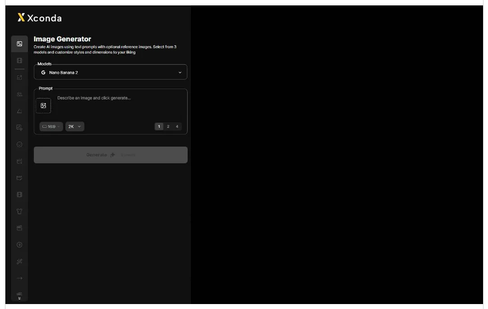
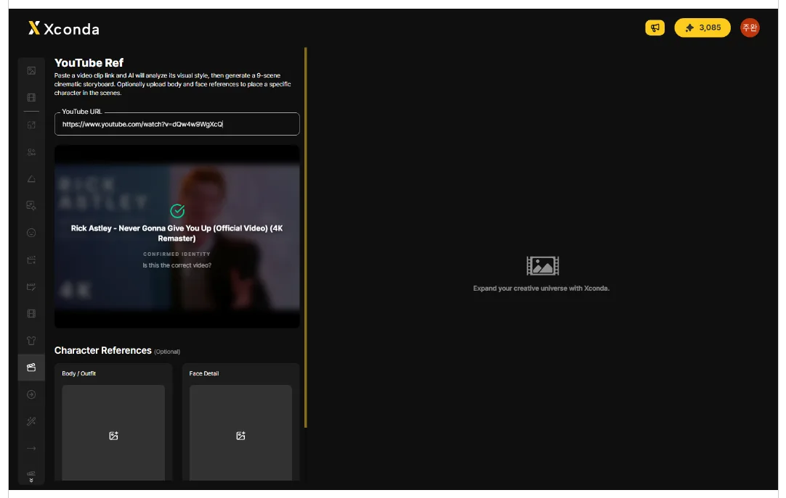
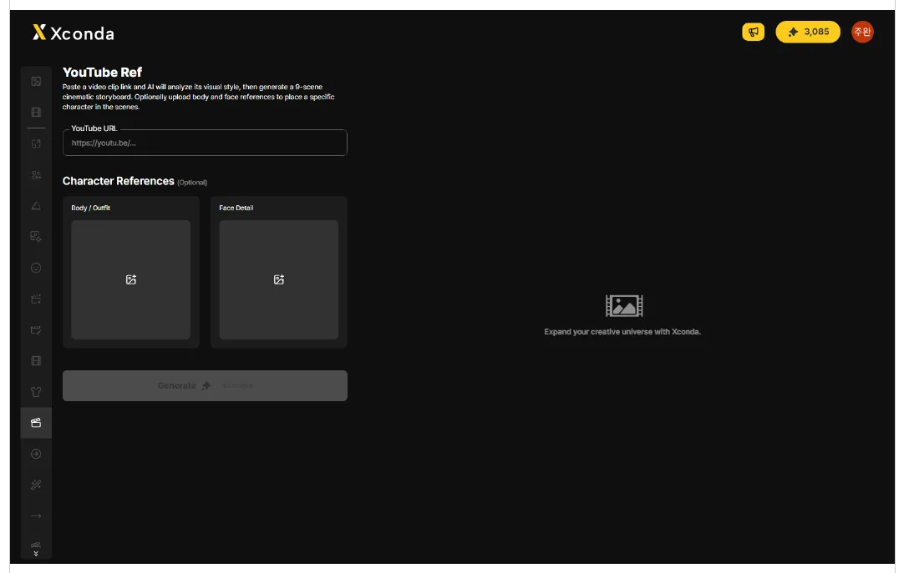
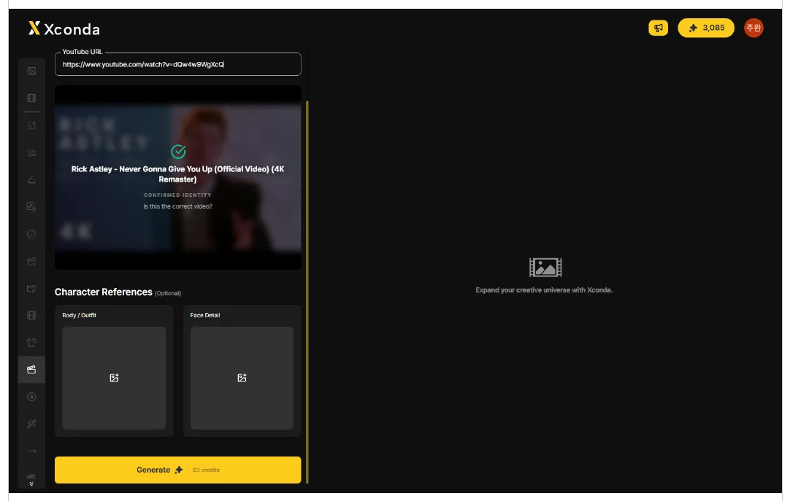
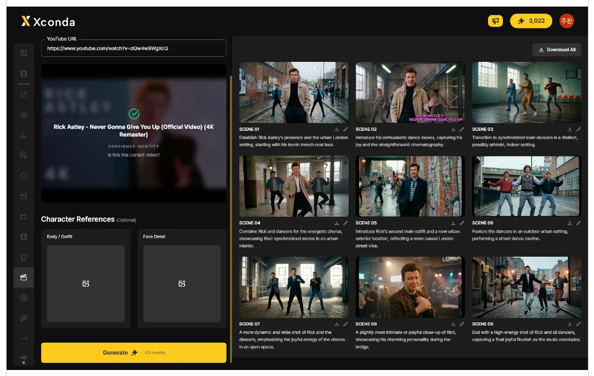
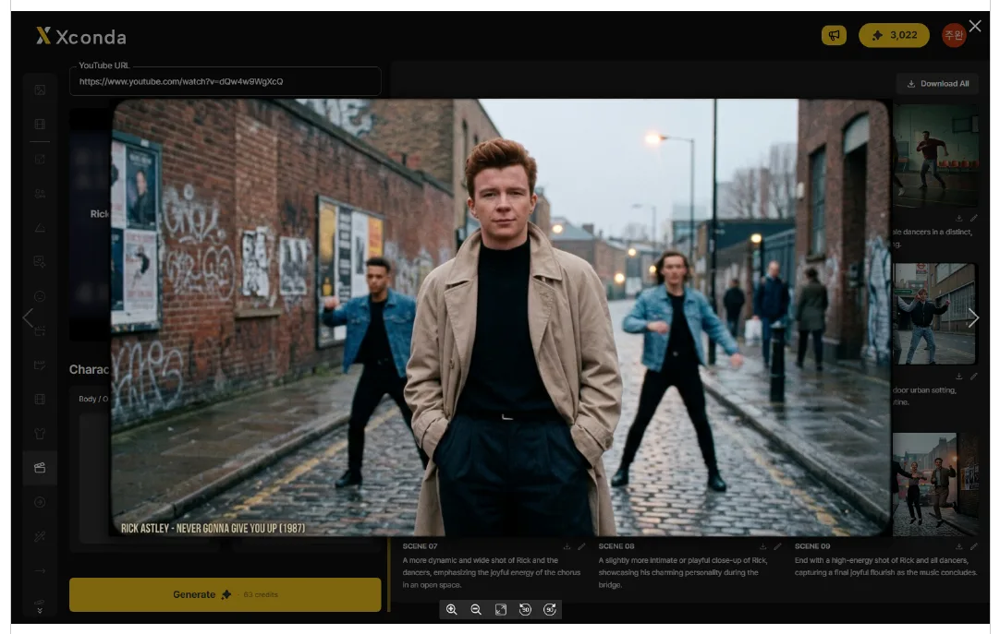
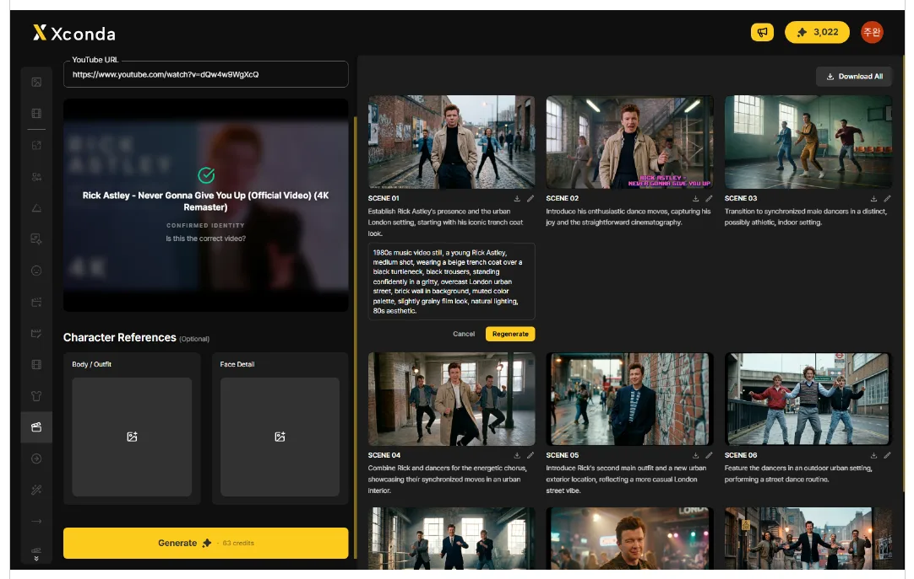

当客户发来参考视频说“照这个做”时，YouTube Ref 可快速把基调与氛围可视化，生成分镜草案。
参考分析、策划会议草案、分镜制作、竞品分析。
快速把握客户发来的参考视频的视觉基调、构图和色彩。
在策划阶段依据参考视频确定方向，并与团队成员共享。
在拍摄或制作之前，用视觉方式确认整体流程。
分析竞品广告视频，找出结构与呈现规律。
链接输入 → 9 场景自动生成、基调与氛围提取、场景自动切分、角色参考、逐场景编辑。
输入 YouTube 视频链接，AI 会分析视频并生成 9 张关键帧分镜。
依据视频的视觉氛围 —— 色彩、光线和构图 —— 生成图像。
AI 会自动把视频流程划分为 9 个场景来构成序列。
上传 Body/Outfit 和 Face Detail 图像，即可把角色体现在分镜中。
编辑场景描述（Regenerate）时，加入具体的空间/环境信息可提升准确度。
点击左侧竖排边栏中第 12 个场记板形状的图标。
点击左侧竖排边栏中第 12 个场记板形状的图标，即可打开 YouTube Ref 工作区。

点击 YouTube URL 字段，输入参考 YouTube 视频的链接。
点击 YouTube URL 字段，输入参考 YouTube 视频的链接。
识别到链接后，会显示视频的缩略图和标题。

如有需要可上传角色参考图像。此项为可选，不上传也可继续。
上传服装和整体轮廓的参考图像。
上传面部细节的参考图像。
这是可选字段，不上传也可继续。

确认视频链接后，点击底部的黄色 Generate 按钮。
确认视频链接后，点击底部的黄色 Generate 按钮。
在确认弹窗中点击 OK 即可开始生成 9 场景分镜。

生成完成后，SCENE 01 至 SCENE 09 会以网格形式显示在右侧结果区域。
生成完成后，SCENE 01 至 SCENE 09 会以网格形式显示在右侧结果区域。每个场景包含图像与场景描述。

点击场景图像即可放大到详情视图。
点击要查看的场景图像，该场景会放大到详情视图。
点击界面上的关闭图标，或按下 Esc 即可关闭详情视图。

点击场景右侧的铅笔图标，编辑描述后点击 Regenerate，即可只重新渲染该场景。
点击场景右侧的铅笔图标。
在文本输入区域编辑场景描述。
点击 Regenerate ，即可按修改后的描述重新渲染该场景。点击 Cancel 放弃更改。

可以一次下载全部场景，也可以单独下载每个场景。
点击右上角的 Download All 按钮，即可下载全部 9 个已生成场景。
点击单个场景上的下载图标，即可只下载该场景。